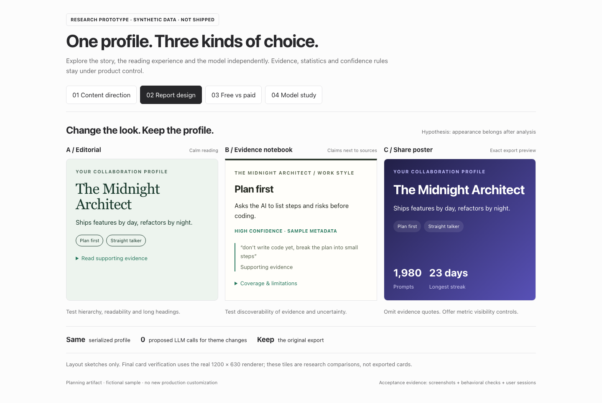
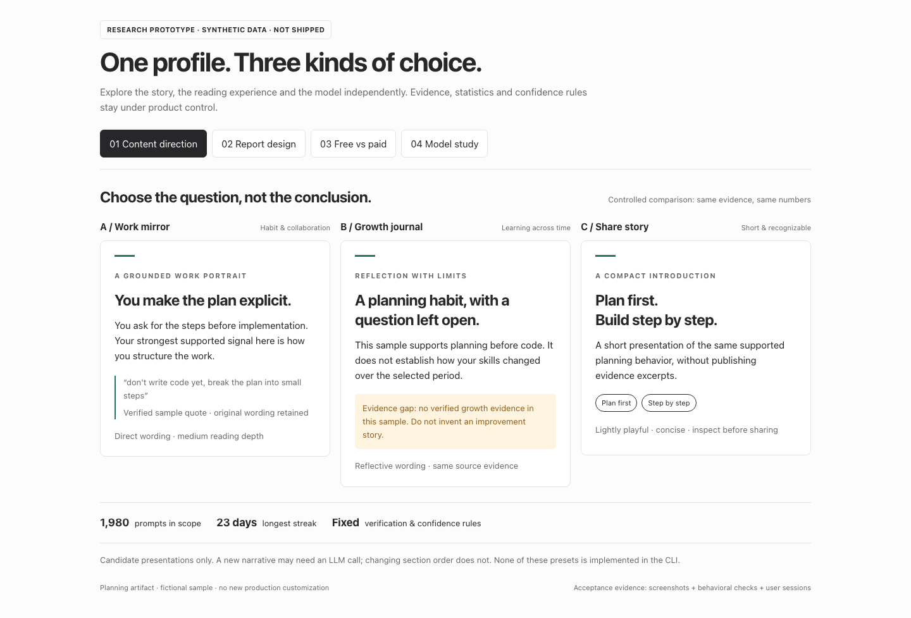
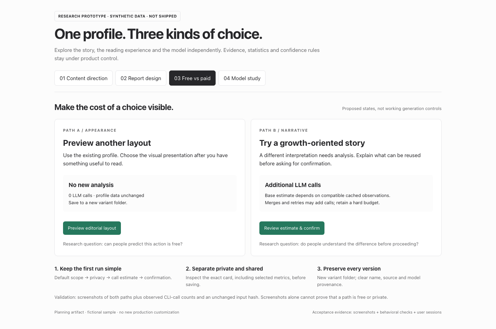
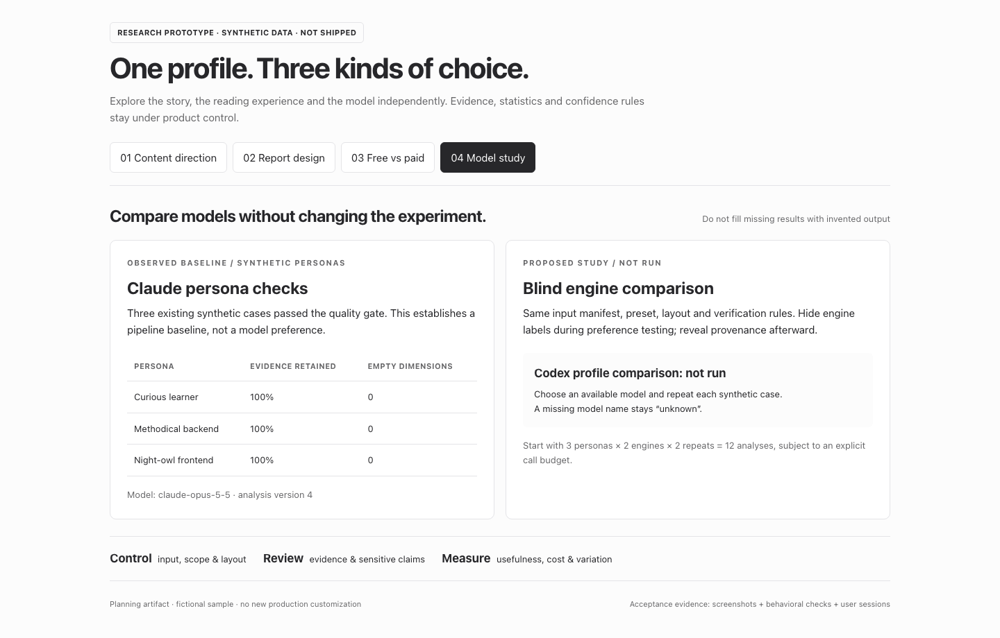
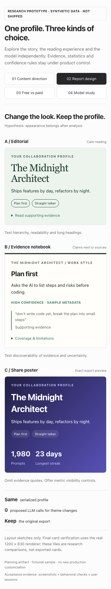
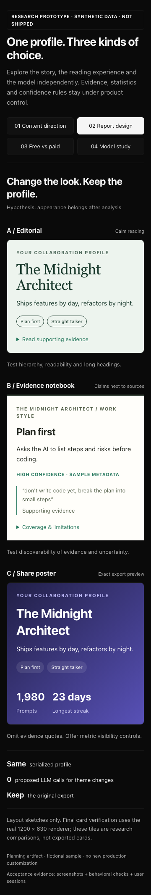
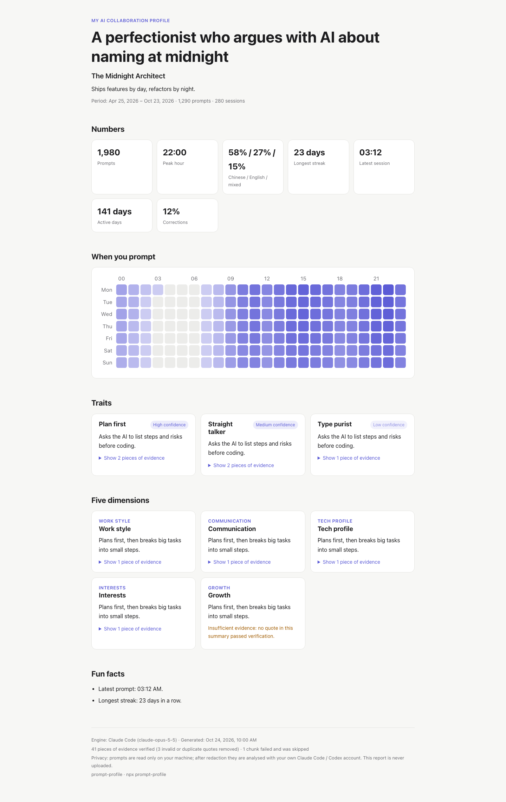

Research prototype, not shipped. Same synthetic profile, three proposed visual directions.
Captured at 1440px.

Research prototype, not shipped. The question and emphasis change; evidence and numbers stay
fixed. Captured at 1440px.

Proposed UX states. Actual call counts and profile hashes must verify these promises during
implementation.

The Claude baseline is observed; the Codex profile comparison is not run. No missing model
result is invented.

390px research prototype. All three layouts remain readable in a vertical sequence.

360px dark research prototype. Browser checks found one active panel and no horizontal
overflow.

Actual current renderer, with the fictional sample profile. This is the baseline, not a new
customization feature.